# bootstrap
def bootstrap(data, n=9999):
"""Bootstrap function"""
return np.random.choice(data, size=(n, len(data)), replace=True)
# bootstrap median
def bootstrap_median(data, n=9999):
"""Bootstrap median function"""
return np.median(bootstrap(data, n), axis=1)
# bootstrap median for control and test
median_c = bootstrap_median(control)
median_t = bootstrap_median(test)
# plot data
fig, ax = plt.subplots(figsize=(10, 5))
sns.histplot(median_t, ax=ax, color=blue, label='Середнє вибіркової медіани для тесту: {:.2f}'.format(np.mean(median_t)))
sns.histplot(median_c, ax=ax, color=red, label='Середнє вибіркової медіани для контролю: {:.2f}'.format(np.mean(median_c)))
ax.legend()
ax.set_title('Розподіл медіани доходу')
plt.show()A/B-тестування
Прикладний статистичний аналіз
Ігор Мірошниченко
КНУ імені Тараса Шевченка | ФІТ
Ідеї та гіпотези
Все починається з ідеї
Експеримент - кінцева точка, коли в нас уже сформульована деяка гіпотеза, якимось чином валідована. Ми розуміємо, на яку частину продукту вона впливає і якою метрикою що потрібно перевірити. Але перед тим, як сформулюється гіпотеза, звідкись береться ідея. Звідки?
Ідея - ще не підтверджена гіпотеза. Гіпотеза народжується на основі даних. Самі дані можуть бути отримані різними способами. наприклад, шляхом вивчення конкурентів, аналізом потенціалу ринку, або з використанням творчих механік (воркшопи, хакатони).
Кожній ідеї - свій метод перевірки
Крім кількісних методів аналізу даних можуть бути:
- Глибинні інтерв’ю - спілкуємося з користувачами, з’ясовуємо проблеми, розмірковуємо
- Опитування - запитуємо що-небудь очно або дистанційним каналом (напр. розсилка)
- Юзабіліті-тестування
Для перевірки гіпотези необхідні умови
- Відсутність факторів, що впливають, крім самої тестованої зміни: коли ми хочемо порівняти дві версії, має впливати тільки зміна, жодних інших зовнішніх чинників.
- Репрезентативна оцінка: репрезентативність - відповідність властивостей вибірки характеристикам генеральної сукупності, тобто коли вибірка відображає властивості генеральної сукупності.
Приклад у цьому контексті: є вибірка А і вибірка Б. У вибірці А є користувачі з Києва. Якщо вибірка репрезентативна, то і в А і в Б користувачів з Києва буде по 30%. Якщо в А буде 25%, а в Б - 10%, то є зміщення і вибірки не репрезентативні. Це критично для проведення чесного А/В-тесту: якщо є дисбаланс, то результат експерименту може пояснюватися не тим, що в нас хороша гіпотеза, а тим, що порушується репрезентативність (напр. іншою купівельною спроможністю).
- Точність оцінки: за точність оцінки відповідають статистичні критерії, щільність і кількість даних, параметри розподілу метрик. Точність впливає на помилки і на якість експериментів.
Що таке A/B тести
Що таке A/B тести
З чого все починалося? Статистика як інструмент використовувалася для клінічних досліджень. Завдяки цим завданням математична статистика розвивалася.
A/B тестування - це де:
- перевіряється два і більше варіанти (контроль і тест) з метою визначення найбільш ефективного
- ступінь ефективності вимірюється за допомогою порахованих імовірностей хибнопозитивних і хибнонегативних випадків
Рішення
- Хибнопозитивні (False Positive, помилка I роду): виявляємо зміни, які насправді не працюють.
- Хибнонегативні (False Negative, помилка II роду): корисні зміни не беруться до уваги. Наприклад, зафіксували результат як не значущий, хоча він значущий.
Приклади
1. Хибнопозитивне рішення
Гіпотеза: підвищення тижневої ціни передплати з 1 до 2
Підсумок: на перших 2 днях експерименту було зафіксовано статистично значущий результат. Продакт і аналітик ухвалили рішення прийняти результат як успішний, а після публікації зміни на всіх користувачів - ключовий показник змінився в гірший бік. Так, прийняли за істину те, що нею не є.
2. Хибнонегативне рішення
Проводили експеримент 2 дні, не бачили різниці, зупинили
Підсумок: оскільки в експерименті було охоплено тільки 2 дні, ми не враховуємо поведінку аудиторії в інші дні тижня. Можливо, зміна має відкладений ефект: користувач у понеділок потрапив у тестову групу, а в п’ятницю прийняв рішення
Як запам’ятати


Помилка I роду — хлопчик закричав “вовк!”, жителі повірили, хоча вовка не було.
Помилка II роду — хлопчик закричав “вовк!”, жителі не повірили, хоча вовк насправді був.
Метрики експерименту
Рівні метрик
- Цільові - показники, на які спрямована зміна (конверсія, середній чек)
- Випереджальні - показники, добре корельовані з цільовими, що дають предикт і корисні тоді, коли немає часу чекати на основну метрику
- Guardrail - показники, на які спрямовано впливає зміна, але які не є цільовими. Рекомендується за ними спостерігати і на їхній основі також ухвалювати рішення
Приклад: e-commerce, тест нового UI кошика
- Цільові: конверсія в покупку, середній чек, ARPU (середній дохід на користувача), ARPPU (середній дохід на користувача, що сплачує)
- Випереджальні: додавання товару в кошик на сесію, перегляди товарів на сесію, відтік чекаута, помилки на чекауті
- Guardrail: час від входу в кошик до його проходження, частка пошукових запитів із кошика, взаємодія з рекомендаційними блоками в кошику
Приклад: освітній продукт, тест нового освітнього контенту
- Цільові: продовження навчання, середній дохід на користувача, що сплачує (ARPPU)
- Випереджальні: інтенсивність навчання, кількість помилок у момент навчання, частота звернень до служби підтримки, технічні характеристики якості відео
- Guardrail: час проведений за одним заняттям, переривання занять, перемотування
Типи метрик
- Частки
- величина, яка береться з бінарної ознаки, коли є дві градації - 0 або 1: реєстрації, утримання на 7 день [0, 1, 1, 0, 0, 0, 0, 1, 1, 1, 0, 1, 0, 1, 0, 0, 1, 1]
- Неперервні
- середнє вибіркове з деякого розподілу неперервних величин: час у сек./хв./тощо, чек у гривні [1123.32, 324.4, 823.21, 924.91].
- Відносні
- відношення двох випадкових величин: поїздок на водія, кліків на сесії, ціна за 1000 показів [10/123 = 0.081, 4129.2/12488 = 0.33, 1/100=0.01]
Пріоритет метрик
Система координат метрик - дає змогу краще і швидше ухвалювати рішення, коли метрик багато.
Якщо немає розуміння пріоритету - прийняти рішення досить складно.
На різних стадіях розвитку продукту система метрик може значно змінюватися - це динамічний артефакт, який потрібно постійно урізноманітнювати.
Довгі метрики vs. Швидкі метрики
У кожної метрики є “вікно” - користувач не відразу ухвалює рішення про те, щоб зробити бажану дію для продукту. Важливо шукати “швидкі” метрики, які залежні від “довгих” і на основі цього змінювати пріоритет і всю ієрархію
Типи експериментів
A/B тестування
Чим корисний: Виміряти ефект від зміни
Ключові особливості:
- кожна група експерименту бачить свій варіант
- групи незалежні
- групи взяті з однієї ГС
- розподіл може бути нерівномірним
A/A тестування
Чим корисний:
- перевірити спліт-систему
- вибрати гомогенні групи
Ключові особливості:
- групи незалежні
- групи взяті з однієї ГС
- часто використовується для симуляцій
A/B/n тестування
Чим корисний: Той самий A/B, тільки перевіряється від 2 і більше змін.
Ключові особливості:
- групи незалежні
- групи взяті з однієї ГС
- пов’язані з проблемою множинної перевірки гіпотез
TDI (team draft interleaving) - тестування змін
Чим корисний: зміни у ранжуванні, рекомендаціях, пошуку
Ключові особливості:
- один користувач бачить одразу кілька варіантів
- найчастіше використовується в пошуку і рекомендаціях
- вибірки залежні - що накладає особливості
A/B vs. TDI
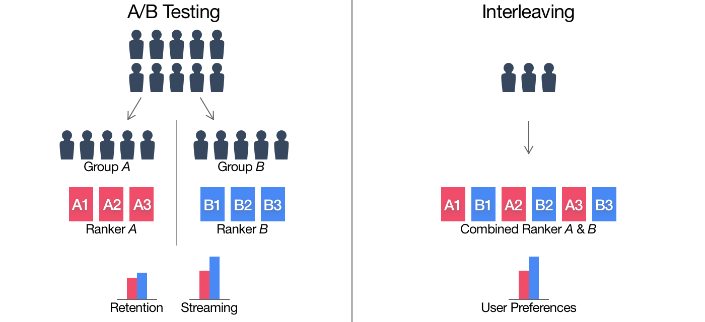Приклад TDI: два алгоритми пошуку
Метод TDI дає змогу показати користувачеві результат видачі користувацького запиту із застосуванням двох алгоритмів. Користувач вирішує кліком, який же алгоритм дав релевантну відповідь. Поділу на варіанти тут немає. Самі розташування відповідей різних алгоритмів будуть перемішуватися, щоб результат експерименту не був залежний від розташування.
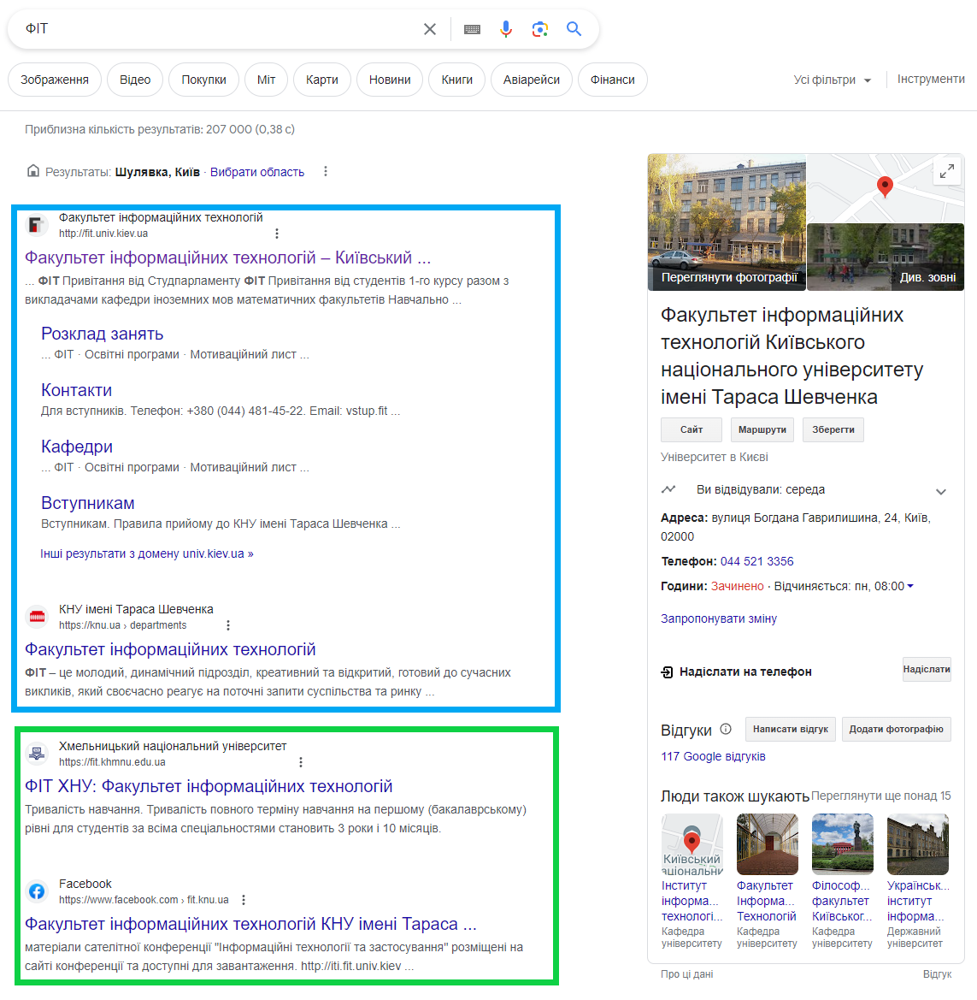Diff-in-Diff (різниця в різниці)
Чим корисний: коли немає можливості поділити користувачів на групи в один момент часу
Ключові особливості:
- групи залежні та рознесені в часі
- один із типів регресій
Приклад Diff-in-Diff: економічна зміна в державі
Є дві групи (тест і контроль) і два періоди - період до взаємодії та після.
Одна з груп схильна до впливу, або бере участь у деякій програмі, у другому періоді, але не в першому. Друга група не піддається впливу в жодному з періодів. Метод усуває зміщення під час порівняння результатів у тестовій і контрольній групах тільки в другому періоді, яке може бути наслідком постійних відмінностей між цими групами.

Bootstrap
Що таке Bootstrap
Бутстрап - ціле сімейство методів, що дає змогу перевіряти гіпотези за допомогою повторних вибірок.
Приклад: кейс із фуд-ритейлу
Додали нову вітрину “Ваші минулі покупки” на чекаут. Цікаво, як змінився середній чек. Як оцінити вплив експерименту на прибуток? Можемо подивитися на розподіл, описові статистики, підібрати тест і перевірити значущість відмінностей.
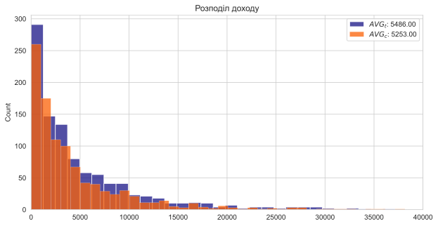На око здається, що в тестовій групі ми стали заробляти більше.
Але бізнесу захочеться зрозуміти, чим пояснюється ця мінливість (різниця, яку ми спостерігаємо), за рахунок якої аудиторії досягли ефекту?
Приклад: кейс із фуд-ритейлу
Що буде краще відображати центральну тенденцію?
Медіана!
Чи можемо використати центральну граничну теорему для щоб побудувати ДІ для медіани?
На даний момент не зможемо, тому потрібен якийсь метод для цього завдання
Приклад: кейс із фуд-ритейлу
Маючи тільки дані за наявною вибіркою, існує можливість оцінити будь-який її параметр, побудувавши емпіричний розподіл параметра.
У контексті нашого завдання з медіаною - отримати розподіл медіан і далі за ним обчислити довірчий інтервал:
Алгоритм:
- Сформувати підвибірки з повтореннями з наявної вибірки
- Обчислити медіану для підвибірки
- Повторити кроки 1-2 N разів
- Побудувати розподіл медіан
- Обчислити довірчий інтервал
Приклад: кейс із фуд-ритейлу
Приклад: кейс із фуд-ритейлу
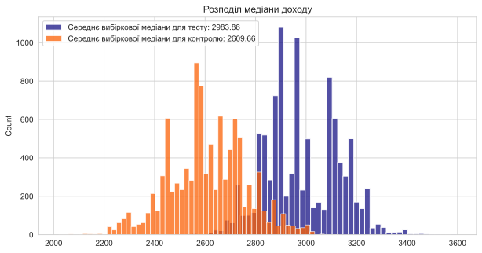
Приклад: кейс із фуд-ритейлу
Медіана за допомогою scipy:
from scipy.stats import bootstrap
# bootstrap median for control and test
median_c = bootstrap(data=(control,), statistic=np.median, confidence_level=0.95)
median_t = bootstrap(data=(test,), statistic=np.median, confidence_level=0.95)
print(f'Довірчий інтервал для контрольної групи = {median_c.confidence_interval}')
print(f'Довірчий інтервал для тестової групи = {median_t.confidence_interval}')Довірчий інтервал для контрольної групи = ConfidenceInterval(low=2294.8899935602362, high=2914.284628954442)
Довірчий інтервал для тестової групи = ConfidenceInterval(low=2728.8595827184886, high=3259.0417274427105)Приклад: кейс із фуд-ритейлу
Середнє за допомогою scipy:
from scipy.stats import bootstrap
# bootstrap median for control and test
mean_c = bootstrap(data=(control,), statistic=np.mean, confidence_level=0.95)
mean_t = bootstrap(data=(test,), statistic=np.mean, confidence_level=0.95)
print(f'Довірчий інтервал для контрольної групи = {mean_c.confidence_interval}')
print(f'Довірчий інтервал для тестової групи = {mean_t.confidence_interval}')Довірчий інтервал для контрольної групи = ConfidenceInterval(low=4714.456586527343, high=6261.43817231836)
Довірчий інтервал для тестової групи = ConfidenceInterval(low=5057.483029164094, high=5998.541280222842)Графік розподілу середнього за допомогою scipy:
# plot data
sns.histplot(mean_t.bootstrap_distribution)
plt.axvline(mean_t.confidence_interval[0], color='red', linestyle='--')
plt.axvline(mean_t.confidence_interval[1], color='red', linestyle='--')
plt.axvline(np.mean(test), color='blue', linestyle='--')
ax.set_title('Розподіл середнього доходу')
plt.show()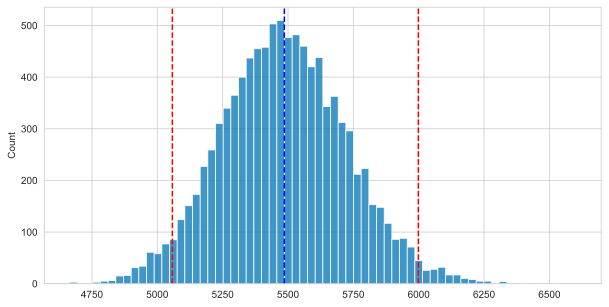
Чи можна використовувати класичний критерій?
У цьому випадку критерій Манна-Вітні найкраще підійде для завдання. Він дає відповідь на запитання, чи значуще різняться розподіли, чи ні.
До того ж, у кожного критерію своє аналітичне рішення, яке вимагає дотримуватися низки припущень (наприклад, однакова дисперсія/однаковий розмір вибірки/однакова форма розподілів тощо). Така можливість не завжди є.
Підсумок
- Бутстрап дає змогу будувати довірчий інтервал для будь-якого параметра розподілу, не застосовуючи для цього аналітичну формулу
- Основна перевага Бутстрап - перевіряти гіпотези для будь-яких параметрів розподілу або моделей: Перцентилі/Квантилі/Децилі тощо.
- Бутстрап перевіряє статистичні гіпотези без опори на певний теоретичний розподіл даних (на відміну від класичних стат. критеріїв)
- Бутстрап дає змогу зробити оцінку будь-якого “складного” параметра шляхом знаходження довірчих інтервалів для нього. А для перевірки гіпотез - шляхом обчислення їхньої різниці.
Гіпотези і бутстрап
Алгоритм:
- Будуєте бутстрап-розподіл параметра в А і Б
- Обчислюєте їхню різницю (віднімання матриць)
- В отриманому розподілі різниць розраховуємо довірчий інтервал
- Якщо довірчий інтервал не містить 0 - гіпотеза про рівність параметрів відхиляється
p-value і бутстрап
Загадаємо, як рахується p-value для t-критерію:
- Нульова гіпотеза: розподіли однакові
\[ H_0: \mu_x = \mu_y \]
- Рахуємо статистику критерію, яка перевіряє відхилення різниці від нуля за t-розподілом:
\[ t = \frac{\bar{x} - \bar{y}}{\sqrt{\frac{s_x^2}{n_x} + \frac{s_y^2}{n_y}}} \]
- На кожній ітерації бутстрапу ми рахуємо різницю, де 0 — її математичне сподівання
- Далі нам би хотілося з’ясувати, з якою ймовірністю ми б бачили такі відмінності в експерименті за умови вірності нульової гіпотези. Тому ми можемо порахувати ймовірність такого випадку, порахувавши суму випадків зі відхиленнями від нуля і поділивши на кількість усіх оцінок. Це і буде p-value:
За умови вірності нульової гіпотези, бутстрап вибірка різниць повинна мати нормальний розподіл з математичним сподіванням 0 (ЦГТ). Тому, якщо ми порахуємо відсоток випадків, коли різниця відхиляється від нуля, то це і буде p-value.
p-value і бутстрап
Приклад реалізації на Python з розрахунком різниць, ДІ і p-value:
import numpy as np
import pandas as pd
import matplotlib.pyplot as plt
from scipy.stats import norm
from tqdm import tqdm
# Створюємо функцію
def get_bootstrap(
data_column_1, # числові значення першої вибірки
data_column_2, # числові значення другої вибірки
boot_it = 1000, # кількість ітерацій бутстрепа
statistic = np.mean, # яку статистику рахуємо
bootstrap_conf_level = 0.95 # рівень значущості
):
boot_len = max([len(data_column_1), len(data_column_2)]) # довжина вибірки
boot_data = [] # будуватимемо розподіл тут
for i in tqdm(range(boot_it)): # створюємо підвибірки
samples_1 = data_column_1.sample(
boot_len,
replace = True # параметр повернення
).values
samples_2 = data_column_2.sample(
boot_len,
replace = True
).values
boot_data.append(statistic(samples_1-samples_2)) # рахуємо статистику
pd_boot_data = pd.DataFrame(boot_data) # перетворюємо в датафрейм
left_quant = (1 - bootstrap_conf_level)/2 # ліва квантиль
right_quant = 1 - (1 - bootstrap_conf_level) / 2 # права квантиль
ci = pd_boot_data.quantile([left_quant, right_quant]) # ДІ
# рахуємо p-value
p_1 = norm.cdf(
x = 0,
loc = np.mean(boot_data),
scale = np.std(boot_data)
)
p_2 = norm.cdf(
x = 0,
loc = -np.mean(boot_data),
scale = np.std(boot_data)
)
p_value = min(p_1, p_2) * 2 # подвоюємо, бо двосторонній критерій
# Візуалізуємо розподіл
plt.hist(pd_boot_data[0], bins = 50)
plt.vlines(ci, ymin=0, ymax=50, linestyle='--', color='red')
plt.xlabel('boot_data')
plt.ylabel('frequency')
plt.title("Histogram of boot_data")
plt.show()
return {"boot_data": boot_data,
"ci": ci,
"p_value": p_value}Повертаємось до прикладу
Повертаємось до прикладу
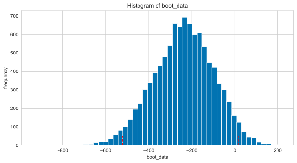
Значення p-value 0.0889417562227498
Довірчий інтервал 0
0.025 -520.593983
0.975 20.008479A/A тестування
Для чого потрібне A/A тестування
Переважно, завдання A/A тестів полягає в тому, щоб зрозуміти, чи працює система сплітування коректно, чи ні.
В А/А-тестах ми хочемо приймати нульову гіпотезу перевіряючи OEC (Overall Evaluation Criterion) - чи є різниця між групами статистично значущою:
\[ OEC_{control_{1}} = OEC_{control_{2}} \]
Переконатися в коректності системи сплітування можна шляхом двоетапної перевірки:
- Чесний розподіл користувачів між групами. Зберігається репрезентативність за частками і дисперсії: сплітовалка не повинна віддавати пріоритет будь-якій із груп за будь-якою ознакою, через що може статися дисбаланс → зміна дисперсії та середніх
- Перевірка FPR за допомогою бізнес-метрик. Частота помилкових прокрасів метрики (наприклад, конверсія і середній чек) не повинна бути вищою за заданий рівень значущості (наприклад, 5%).
Етапи A/A тестування
- Проводимо A/A тест. Час на A/A визначається таким чином, щоб охопити якомога більше факторів впливу на метрику (наприклад, тижнева сезонність)
- Симулюємо нові A/A. Тест перераховується ≥ 10 тис. разів за допомогою симуляції нових “синтетичних” A/A
- Рахуємо стат. значущість. У кожному тесті рахується p-value за допомогою статистичного оцінювача (бутстрап, t-тест тощо)
- Рахуємо метрику якості FPR (False Positive Rate)
- Робимо висновки. Перевіряється умова FPR < \(\alpha\), і якщо умова дотримується, то сплітовалка працює коректно
Показник якості FPR
Для перевірки якості сплітовалки рахуємо частку хибно позитивних оцінок (FPR):
\[ FPR = \frac{FP}{FP + TN} = \frac{FP}{N_{sim}}\]
Необхідно перевіряти FPR на кожному рівні значущості: частота хибних профарбовувань не повинна бути вищою за заданий рівень значущості. FPR не повинен перевищувати 0.05 для α = 0.05. Відповідно і для 0.01, 0.005 тощо.
Завищений FPR
Основні причини криються в зламаному спліт-алгоритмі.
Причини необхідно шукати на стороні, де реалізовано скрипт і його запуск. Часті кейси:
- Довге очікування відповіді сервера щодо присвоєння id експерименту і спліту
- Пріоритет тій чи іншій групі
- Не на всіх сторінках / кейсах реалізовано спліт-алгоритм
- Банально “зламаний” рандом (залишок від ділення за сумою хеша?)
Пошук причини
Дисбаланс у групах за описовими ознаками.
Для пошуку дисбалансу необхідно порівняти поділ груп із врахуванням ознак. Цілком підійдуть:
- регіон
- джерело трафіку
- тип браузера
- тощо
Сильна відмінність конверсії всередині груп
Для пошуку причини необхідно порівняти конверсію всередині градацій між контролем і тестом:
- Перевірка p-value на рівні \(\alpha\)
- Додаткова перевірка FPR на рівні \(\alpha\) (опціонально)
Критерій для перевірки дисбалансу
Для перевірки фактичних часток з їхнім теоретичним рівномірним розподілом використовують спеціалізовані критерії згоди.
У ситуації з А/А підійде критерій CMH (Cochran-Mantel-Haenszel) для перевірки таблиць спряженості 2 х 2 x K, де K - кількість градацій за аналізованою ознакою (наприклад, браузер 1, браузер 2 тощо).
В Python реалізований в statsmodels.stats.contingency_tables.StratifiedTable.
Як користуватися StratifiedTable
За своєю суттю стратифіковані таблиці являють собою різновид так званих таблиць спряженості - методів перевірки взаємозв’язку між двома номінативними змінними.
Але відмінність полягає в тому, що в стратифікованих таблицях ми можемо використовувати більше двох змінних.
Приклад StratifiedTable
Стратифіковані таблиці вносять третій вимір у процес. Уявіть, що ми перевіряємо ту саму гіпотезу про зв’язок статі та виживаймості, проте нам цікаво: а чи однаковий цей взаємозв’язок у різних класах? Відповідно, клас тут буде стратифікуючою змінною, і в нас одразу дві нульові гіпотези (якщо грубо):
- розподіл частот значень змінних статі і виживаймості (змінні незалежні одна від одної) цей розподіл однаковий у всіх класах
- цей розподіл однаковий у всіх класах
Приклад StratifiedTable
Тут нас цікавить p-value.
- Перший рядок (
Test of OR=1) - це перевірка гіпотези про незалежність змінних, - Другий рядок (
Test constant OR) - перевірка гіпотези про однаковість зв’язку за всіма рівнями стратифікуючої змінної.
Так, у цій таблиці видно, що між змінними є зв’язок, і цей зв’язок різний у всіх класах.
| Estimate | LCB | UCB | |
| Pooled odds | 0.073 | 0.051 | 0.104 |
| Pooled log odds | -2.622 | -2.982 | -2.261 |
| Pooled risk ratio | 0.353 | ||
| Statistic | P-value | ||
| Test of OR=1 | 250.447 | 0.000 | |
| Test constant OR | 26.508 | 0.000 | |
| Number of tables | 3 | ||
| Min n | 184 | ||
| Max n | 491 | ||
| Avg n | 297 | ||
| Total n | 891 |
Приклад: стрімінговий музичний сервіс
- Користувачі мають різний смак і ведуть себе по різному
- Хочемо порівняти різні алгоритми створення плейлистів
- Використаємо показники:
- CTR (click-through rate) - частка користувачів, які клікнули на плейлист
- Кількість відвідувань сервісу
- Кількість кліків на плейлист
- Чи почав користувач слухати плейлист
Приклад: стрімінговий музичний сервіс
- Використаємо Бета-розподіл для генерації CTR.
- Використаємо логнормальний розподіл для генерації кількості відвідувань.
- Використаємо біноміальний розподіл для генерації кількості кліків.
- Бінарну змінну, чи почав користувач слухати плейлист, згенеруємо за допомогою попередніх змінних.
np.random.seed(1234)
# Кількість користувачів
n_users = 1000
# Параметри CTR
mean_ctr = 0.2
beta = 20
alpha = mean_ctr * beta / (1 - mean_ctr)
# Генеруємо дані
ctr = np.random.beta(alpha, beta, size=n_users)
views = np.random.lognormal(mean=1, sigma=1, size=n_users).astype(int) + 1
clicks = np.random.binomial(n=views, p=ctr)
sessions = []
for v, c in zip(views, clicks):
sessions += [1] * c + [0] * (v - c)Приклад: стрімінговий музичний сервіс
Візуалізуємо дані розподіли трьох змінних
import matplotlib.pyplot as plt
import seaborn as sns
sns.set_style('whitegrid')
sns.set_palette('colorblind')
fig, ax = plt.subplots(2, 2, figsize=(15, 7))
sns.histplot(ctr, ax=ax[0, 0])
sns.histplot(views, ax=ax[0, 1], bins=25)
sns.histplot(clicks, ax=ax[1, 0], bins=10)
sns.histplot(sessions, ax=ax[1, 1])
ax[0, 0].set_title('CTR')
ax[0, 1].set_title('Views')
ax[1, 0].set_title('Clicks')
ax[1, 1].set_title('Session')
plt.show()
display(Markdown(f'В середньому {np.mean(sessions):.2%} користувачів клікнули на плейлист'))Приклад: стрімінговий музичний сервіс
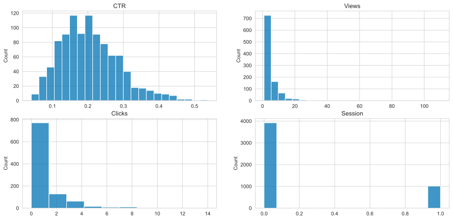
В середньому 20.54% користувачів клікнули на плейлист
Приклад: стрімінговий музичний сервіс
Розбиваємо користувачів на групи і порівнюємо розподіли
from statsmodels.stats.proportion import proportions_ztest
def get_pvalue():
user_ctr = np.random.beta(alpha, beta, size=users_num)
views = np.random.lognormal(mean=1, sigma=1, size=users_num).astype(int) + 1
clicks = np.random.binomial(views, user_ctr)
mask = np.random.rand(len(views)) < 0.5
views_1, clicks_1 = views[mask], clicks[mask]
views_2, clicks_2 = views[~mask], clicks[~mask]
sessions_1 = []
for v, c in zip(views_1, clicks_1):
sessions_1 += [1] * c + [0] * (v - c)
sessions_2 = []
for v, c in zip(views_2, clicks_2):
sessions_2 += [1] * c + [0] * (v - c)
return proportions_ztest(
count=[sum(sessions_1), sum(sessions_2)],
nobs=[len(sessions_1), len(sessions_2)]
)[1]Приклад: стрімінговий музичний сервіс
Проводимо 10000 A/A-експериментів і рахуємо p-value
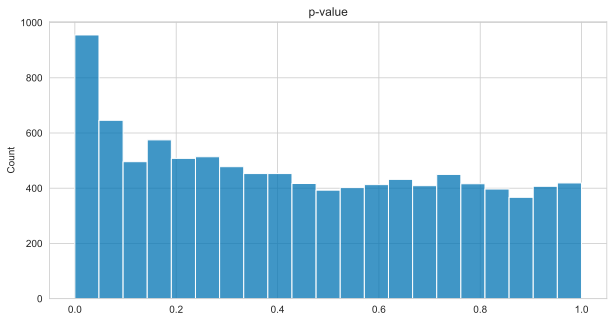Приклад: стрімінговий музичний сервіс
- Дані з однієї генеральної сукупності
- Але при рівні значущості \(\alpha = 0.05\) ми вихиляємо нульову гіпотезу в 1.98 рази частіше, ніж очікувалося
Чому так вийшло?
Сесія залежить від переглядів і кліків на плейлист, а не від розбиття на групи.
Приклад: стрімінговий музичний сервіс
Альтернатива: порівнювати кліки між групами
from scipy.stats import mannwhitneyu
def get_pvalue():
user_ctr = np.random.beta(alpha, beta, size=users_num)
views = np.random.lognormal(mean=1, sigma=1, size=users_num).astype(int) + 1
clicks = np.random.binomial(views, user_ctr)
mask = np.random.rand(len(views)) < 0.5
views_1, clicks_1 = views[mask], clicks[mask]
views_2, clicks_2 = views[~mask], clicks[~mask]
return mannwhitneyu(clicks_1, clicks_2)[1]Приклад: стрімінговий музичний сервіс
Проводимо 10000 A/A-експериментів за альтернативним сценарієм і рахуємо p-value
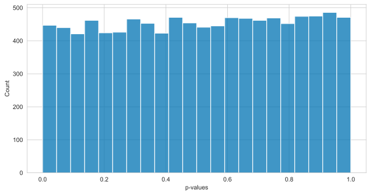Алгоритм А/А-експерименту
- Взяти вибірку з метриками (бажано без експерементів)
- Симулюємо А/А-експерименти (десятки тисяч разів)
- Оцінюємо p-value у кожному експерименті і порівнюємо з рівнем значущості \(\alpha\)
- Оцінюємо кількість помилок першого роду (хибнопозитивних) і дивимось розподіл p-value
- Порівнюємо з очікуваною кількістю помилок першого роду
Обмеження і інші моменти
- А/А бажано проводити якомога довше, щоб досягти достатньої репрезентативності (охопити тижневу сезонність і різні групи користувачів)
- У разі, якщо немає можливості чекати, то не рекомендується використовувати “довгограючі” метрики для перевірки спліту (наприклад, С2 - конверсія в покупку)
- Пост-симуляції потрібно робити без повернення спостережень у сплітах
- Для пост-симуляцій найкраще підійде бутстрап, завдяки своїй точності
Де ще застосовують A/A-тестування
- A/A/B для контролю втручання інших (паралельних) експериментів
- Підбір релевантних груп для порівняння між собою (наприклад, пошук близьких регіонів)
- Симуляції для перевірки статистичного оцінювача (наприклад, щоб перевірити потужність для тесту при різних treatment ефектах)
Вибір метода тестування
Блок схема вибору метода тестування
flowchart TD
A[Тип даних] -->|Неперервні|B[Тип питання?]
A -->|Дискретні|C[Хі-квадрат]
B --> |Взаємозвязок| D[Чи є незалежна змінна?]
B --> |Різниця| E[Різниця між чим?]
D --> |Так| F[Регресійний аналіз]
D --> |Ні| G[Кореляційний аналіз]
G --> |Параметричний| T[Кореляція Пірсона]
G --> |Непараметричний| U[Кореляція Спірмена]
E --> |Тест однаковості дисперсії| H[F тест,<br/> Тест Брауна-Форсайта,<br/> Тест Бартлетта]
E --> |Середніх| I[Скільки груп?]
I --> |2| J[Параметричні умови виконуються?]
I --> |> 2| K[Параметричні умови виконуються?]
J --> |Так| L[t-тест для незалежних вибірок,<br/> t-тест для залежних вибірок]
J --> |Ні| M[Трансформація даних працює?]
M --> |Так| L
M --> |Ні| N[Манна-Уїтні,<br/> Вілкоксон]
K --> |Так| O[ANOVA]
K --> |Ні| P[Трансформація даних працює?]
P --> |Так| O
P --> |Ні| Q[Критерій Краскела-Уолліса]
O --> R[Пост-аналіз: <br/>Тест Тьюкі, <br/>Бонферроні]
Q --> S[Пост-аналіз: <br/>Тест Данна]
style noteA opacity:0
style noteA color:#0000
subgraph noteA ["`**Параметричні умови:**<br/>1. Нормальність<br/>2. Рівність дисперсій<br/>3. Незалежні, незміщенні вибірки`"]
end
Розбиття на групи
Розбиття користувачів на групи
- Основна мета — створити контрольну і тестову вибірку так, щоб вони були максимально схожі
- Досягається за рахунок випадкового розподілу користувачів на групи
- Розбиття повинно бути відтворюваним
- Зазвичай реалізується через використання хеш-функції від ідентифікатора користувача з певною сіллю
Хеш-функція та сіль
- Хеш-функція - це функція, яка перетворює будь-який об’єкт на випадковий набір байтів
- Хеш-функція має властивість, що при однакових вхідних даних вона завжди повертає один і той же результат
- Сіль - це додатковий параметр, який додається до вхідних даних
- Сіль дозволяє змінити результат хеш-функції, якщо вхідні дані не змінилися
Приклад
Згенеруємо тестові дані для розбиття на групи:
Приклад
Використаємо md5-хеш-функцію для розбиття на групи:
Приклад
Застосуємо до всіх користувачів:
# Створюємо функцію для розбиття на групи
def hash_group(user_id, salt, n_groups):
value_str = str(user_id) + str(salt)
value_num = int(hashlib.md5(value_str.encode()).hexdigest(), 16)
return value_num % n_groups
salt = 'test_1'
n_groups = 2
# Застосовуємо функцію до всіх користувачів
df['group'] = df['user_id'].apply(hash_group, args=(salt, n_groups))
# Перевіряємо розподіл користувачів
df['group'].value_counts()group
1 512
0 488
Name: count, dtype: int64Приклад
np.random.seed(1234)
# Чи клікнув користувач на рекламу
df['clicks'] = np.random.choice(range(2), size=n_users, replace=True)
# Розбиваємо на групи
df['aa_1'] = df['user_id'].apply(hash_group, args=('aa_1', n_groups))
df['aa_2'] = df['user_id'].apply(hash_group, args=('aa_2', n_groups))
df['aa_3'] = df['user_id'].apply(hash_group, args=('aa_3', n_groups))
df.head()| user_id | clicks | aa_1 | aa_2 | aa_3 | |
|---|---|---|---|---|---|
| 0 | 681 | 1 | 1 | 1 | 1 |
| 1 | 990 | 1 | 1 | 1 | 1 |
| 2 | 155 | 0 | 0 | 1 | 0 |
| 3 | 768 | 1 | 1 | 1 | 1 |
| 4 | 438 | 0 | 0 | 1 | 1 |
Перевірка сплітів
- Перевіряємо основні сегменти на рівність
- Розмір груп має бути достатньо близьким один до одного
- Важливо перевіряти розміри ортогональних експериментів, тобто коли проводяться два експерименти, але користувачі розбиваються за допомогою різних солей.
Потужність критерію
Згенеруємо дані для експерименту:
users_num = 1000
mean_user_ctr = 0.2
beta = 20
def get_clicks(effect=0.01):
new_mean_user_ctr = mean_user_ctr + effect
alpha = new_mean_user_ctr * beta / (1 - new_mean_user_ctr)
user_ctr = np.random.beta(alpha, beta, size=users_num)
views = np.random.lognormal(mean=1, sigma=1, size=users_num).astype(int) + 1
return np.random.binomial(views, user_ctr)
def get_pvalue():
clicks_1 = get_clicks(effect=0)
clicks_2 = get_clicks(effect=0.03)
return mannwhitneyu(clicks_1, clicks_2)[1]
pvalues = [get_pvalue() for _ in range(10000)]Потужність критерію
Графік розподілу p-value:
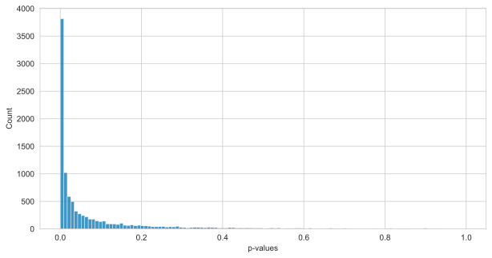Потужність критерію
Потужність критерію при оцінці числа кліків:
from scipy.stats import rankdata
sorted_pvalues = np.sort(pvalues)
position = rankdata(sorted_pvalues, method='ordinal')
cdf = position / sorted_pvalues.shape[0]
sorted_data = np.hstack((sorted_pvalues, 1))
cdf = np.hstack((cdf, 1))
plt.plot(sorted_data, cdf, linestyle='solid')
plt.axvline(0.05, color='k', alpha=0.5)
plt.xlim(-0.05,1.02)
plt.ylim(-0.02,1.02)
plt.xlabel(r'$\alpha$')
plt.ylabel('Потужність')
plt.title('Потужність критерію Манна-Уітні при оцінці числа кліків')
plt.tight_layout()
plt.savefig('power.pdf')
plt.show()
display(Markdown(f'Чим вища потужність критерію, частіше ми припускаємо помилки першого роду.\nТобто для даного прикладу, приблизно у 65% випадків ми зможемо виявити ефект, а у 35% випадків - ні.'))Потужність критерію
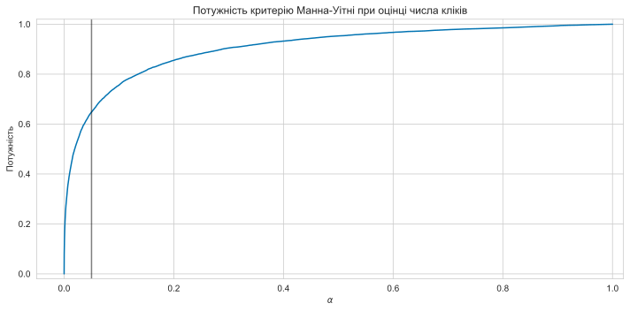
Чим вища потужність критерію, частіше ми припускаємо помилки першого роду. Тобто для даного прикладу, приблизно у 65% випадків ми зможемо виявити ефект, а у 35% випадків - ні.
Потужність критерію
Потужність критерію залежить від:
- Статистичного критерію
- Критерії, які використовують ранги, мають більшу потужність
- Критерії, які використовують значення, мають меншу потужність
Слід перевіряти, які критерії працюють краще для наших даних
Потужність критерію
Потужність критерію залежить від:
- Дисперсії даних
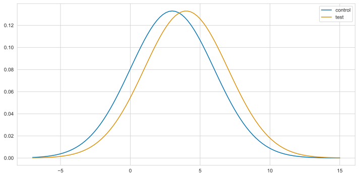

Потужність критерію
Потужність критерію залежить від:
- Розмір ефекту — чим більший ефект, ти легше його виявити
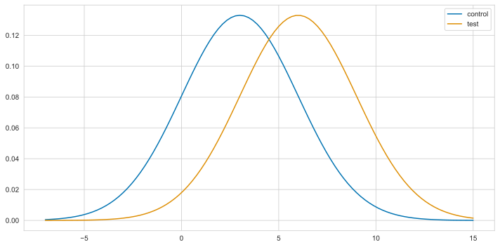
Потужність критерію
Потужність критерію залежить від:
- Розміру вибірки — чим більша вибірка, тим легше виявити ефект
Наприклад, для критеію Стюдента — значення статистики збільшується при збільшенні вибірки
\[T_N=\frac{\overline{X}-\mu}{\frac{S}{\sqrt{N}}}\]
У цьому критерію потужність зростаю пропорційно \(\sqrt{N}\), тобто для того, щоб зменшити помилку вдвічі, потрібно збільшити вибірку в чотири рази
Потужність через А/А-експерименти
Також можна оцінювати потужність критерію через А/А-експерименти. Для цього потрібно:
Штучно будемо збільшимо ефект для однієї групи:
users_num = 1000
mean_user_ctr = 0.2
beta = 20
def get_clicks(effect=0.01):
new_mean_user_ctr = mean_user_ctr + effect
alpha = new_mean_user_ctr * beta / (1 - new_mean_user_ctr)
user_ctr = np.random.beta(alpha, beta, size=users_num)
views = np.random.lognormal(mean=1, sigma=1, size=users_num).astype(int) + 1
return np.random.binomial(views, user_ctr)
def get_pvalue(effect):
clicks_1 = get_clicks(effect=0)
clicks_2 = get_clicks(effect=effect)
return mannwhitneyu(clicks_1, clicks_2)[1]Потужність через А/А-експерименти
Проводимо 10000 А/А-експериментів, рахуємо p-value і оцінюємо потужність критерію:
- Коли ефект маленький, то і потужність близька до нуля.
- Коли ефект зростає, то потужність наближається до 1
- Потужність потрібно знати, щоб не виявилося, що вона становить 20% - тільки кожен 5-й успішний експеримент може бути детектуваний.
- Невеликі ефекти критерії профарбовують насилу - невеликі ефекти навряд чи допоможуть нашій компанії вирости.
Потужність через А/А-експерименти
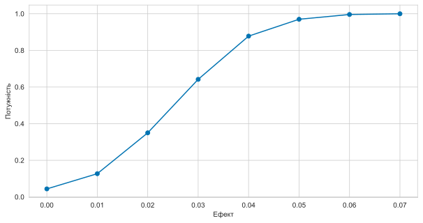
Тривалість експерименту
Тривалість експерименту
Розмір вибірки визначає тривалість експерименту.
Якщо ми хочемо виявити ефект 1%, то нам потрібно зібрати більше даних, ніж для виявлення ефекту 10%
Тобто в нас є дві альтернативи:
- Збільшити розмір вибірки
- Збільшити тривалість експерименту
Тривалість експерименту
Тривалість має бути репрезентативною для генеральної сукупності, наприклад, враховувати повні тижні.
Скільки часу нам треба?
Мінімальний ефект, який можна виявити (MDE, англ. Minimal detectable effect)
MDE
MDE - це мінімальний ефект, який ми зможемо виявити для заданого рівня значущості \(\alpha\) та потужності критерію \(\beta\).
Визначається для кожної статистичного критерію окремо.
Наприклад, для критерію Сюдента:
\[\delta = (t_{1-\alpha/2} + t_{\beta}) \sigma\frac{2}{\sqrt{N}}\]
- Чим менший рівень значущості, тим більші значення квантиля у t-розподілу ми отримаємо.
- Чим більшу потужність ми хочемо отримати, тим більший квантиль t-розподілу потрібно взяти.
- Чим більша дисперсія в даних, тим ефект більший. Чим більше даних - тим менший MDE.
MDE
Якщо ми знаємо розподіл метрик, яка в них дисперсія, яку потужність хочемо отримати і якого розміру вибірку використовуватимемо - ми можемо обчислити MDE.
N = 10000
sigma = 5
alpha = 0.05
power = 0.8
from scipy.stats import t
S = sigma * np.sqrt(2 / N)
M = t(N-1).ppf(q=1-alpha/2) + t(N-1).ppf(q=power)
S * M0.19812131073445988Мінімальний ефект, який можна виявити, складає 0.2.
MDE
Графік залежності MDE від розміру вибірки:
MDE
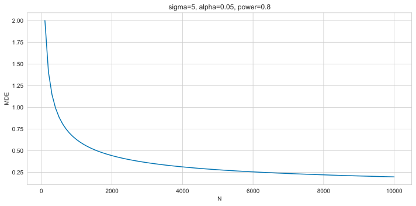
Розмір вибірки
У зворотний бік можна за очікуваним ефектом обчислити необхідний розмір вибірки:
\[N = \frac{2\sigma^2(t_{1-\alpha/2} + t_{\beta})^2}{effect^2}\]
Методи зменшення дисперсії
Що впливає на потужність
- Вибір критерію
- Величина ефекту
- Кількість спостережень
- Дисперсія даних
Що впливає на потужність
- Вибір критерію - беремо кращій
- Величина ефекту - яка є
- Кількість спостережень - чим більше, тим краще
- Дисперсія даних - ?
Величина дисперсії
- Чим більша дисперсія, тим складніше виявити ефект
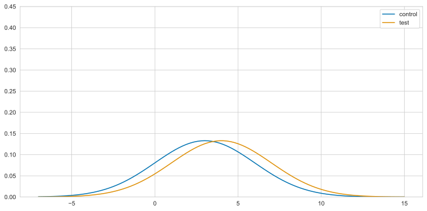
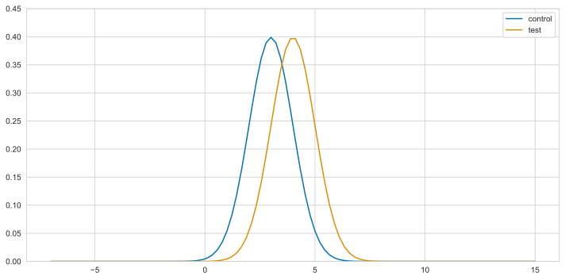
Довірчий інтервал
- Довірчий інтервал - це інтервал, який містить параметр з заданою ймовірністю
\[ \overline{X} \pm t_{N-1,1-\frac{\alpha}{2}} \frac{S}{\sqrt{N}}\]
CUPED
Уявімо, що в нас є 2 користувачі:
- До експерименту в першого було 3 прослуховування треків, у другого - 15
- Під час експерименту стало 4 і 16 відповідно
- Дисперсія помітно більша, ніж ефект
- Як нам виключити особливості користувача, а дивитися на потенційну зміну?
CUPED
- Виключаємо ефект із метрики
- Вводимо нову метрику:
\[ Y_{cuped} = Y - \theta X\]
- \(Y\) - початкова метрика
- \(X\) - деякий показник користувача, який не залежить від потрапляння користувача в групу
- \(\theta\) - загальний параметр
Що за \(X\) і де взяти \(\theta\)?
CUPED
Дисперсія нової метрики:
\[Var(Y_{cuped}) = Var(Y) + \theta^2 Var(X) - 2\theta Cov(Y, X)\]
тоді:
\[\theta = \frac{Cov(Y, X)}{Var(X)}\]
CUPED
\[\theta = \frac{Cov(Y, X)}{Var(X)}\]
Підствимо:
\[ Var(Y_{cuped}) = Var(Y) + \theta^2 Var(X) - 2\theta Cov(Y, X) = \\ Var(Y) + \frac{Cov(Y, X)^2}{Var(X)} - 2\frac{Cov(Y, X)^2}{Var(X)} = \\ Var(Y) - \frac{Cov(Y, X)^2}{Var(Y)Var(X)} = Var(Y)(1 - \rho^2(Y,X))\]
CUPED
- Звітки взяти \(X\)? Як зробити так, щоб експеремент на нього не впливав?
Наприклад, взяти показник користувача до експерименту:
\[Y_{cuped}= Y - \frac{Cov(Y, Y_{prev})}{Var(Y_{prev})}Y_{prev}\]
або
\[Y_{cuped}= Y - \frac{Cov(Y, Y_{prev})}{Var(Y_{prev})}(Y_{prev}-\overline{Y_{prev}})\]
CUPED: приклад
- Користувачі регулярно роблять покупки
- У кожного користувача різна середня сума корзини і є різниця між покупками
np.random.seed(1234)
users_num = 1000
df = pd.DataFrame()
df['user'] = range(users_num)
df['group'] = np.random.rand(users_num) < 0.5
df['user_mean'] = np.random.uniform(400, 1000, size=users_num)
df['cost_before'] = df['user_mean'] + np.random.normal(0, 50, size=users_num)
df['cost'] = df['user_mean'] + np.random.normal(0, 50, size=users_num)
df.head()| user | group | user_mean | cost_before | cost | |
|---|---|---|---|---|---|
| 0 | 0 | True | 640.663845 | 661.172318 | 654.736238 |
| 1 | 1 | False | 958.368641 | 993.761613 | 1016.476790 |
| 2 | 2 | True | 709.201688 | 654.161839 | 707.446650 |
| 3 | 3 | False | 885.749211 | 963.991729 | 844.468461 |
| 4 | 4 | False | 929.063337 | 957.175482 | 913.605361 |
CUPED: приклад
Рахуємо параметр \(\theta\):
\[\theta = \frac{Cov(Y, X)}{Var(X)}\]
0.9240442595985432Стивимо нову метрику:
\[Y_{cuped}= Y - \frac{Cov(Y, Y_{prev})}{Var(Y_{prev})}(Y_{prev}-\overline{Y_{prev}})\]
CUPED: приклад
Порівняємо дисперсії для кожної групи і відсоток зменшення дисперсії:
CUPED: підсумки
- Допомагає зменшити дисперсію на 20-30%
- Корисний для дисперсних метрик, на менш дисперсних може давати близьконульовий буст
- Зберігає ефект і інтерпретуємо (взяли нову метрику, яка вичищена стара)
A/B тести і відносні метрики
Вимірювання кліків
- Більша частина метрик є бінарною: клікнув чи ні, купив чи ні, підписався чи ні
- Якщо ми вимірюємо кліки, то ми можемо виміряти їх як абсолютну величину, так і відносно до кількості показів
- Хочеться вимірювати CTR (click-through rate) - відношення кліків до показів:
- глобально для всього сайту
- для кожного користувача окремо і усереднити
\[CTR = \frac{clicks}{views}\]
Дані
Згенеруємо дані для прикладу:
np.random.seed(1234)
users_num = 10000
mean_user_ctr = 0.2
beta = 20
alpha = mean_user_ctr * beta / (1 - mean_user_ctr)
df = pd.DataFrame()
df['user'] = range(users_num)
df['group'] = np.random.rand(users_num) < 0.5
df['base_user_ctr'] = np.random.beta(alpha, beta, size=users_num)
df['views'] = np.random.lognormal(mean=1, sigma=1, size=users_num).astype(int) + 1
df['clicks'] = np.random.binomial(df['views'], df['base_user_ctr'])Дані: візуалізація
Як вимірювати CTR
Наївно:
- Кожен клік — це випадкова величина з розподілу Бернуллі
- Давайте порівнювати дві групи за рівністю \(p\) в розподілі Бернуллі
- Кращий варіант: Z-критерій для різниці двох долей
Але:
- Порушується незалежність спостережень — не контролюємо помилки першого роду
Все пропало…
Як вимірювати CTR
Порівнюємо кількість кліків:
- Рахуємо по кожному користувачу кількість кліків
- Порівнюємо дві групи за допомогою t-критерію Стюдента або U-критерію Манна-Уітні
Як вимірювати CTR
Але хотілося б враховувати і перегляди
- Груповий CTR:
\[CTR = \frac{\sum_{i=1}^{N} clicks_i}{\sum_{i=1}^{N} views_i}\]
CTR і бутстрап
- Формуємо вибірки з поверненням
- Для кожної вибірки рахуємо груповий CTR
- Оцінюємо значущість різниці групових CTR
n_iter = 1000
data_1 = df[df.group == 0]
data_2 = df[df.group == 1]
stats = []
for _ in range(n_iter):
sampled_data_1 = data_1.sample(n=len(data_1), replace=True)
sampled_data_2 = data_2.sample(n=len(data_2), replace=True)
ctr_1 = sampled_data_1.clicks.sum() / sampled_data_1.views.sum()
ctr_2 = sampled_data_2.clicks.sum() / sampled_data_2.views.sum()
stats.append(ctr_1 - ctr_2)
stats = np.array(stats)CTR і бутстрап
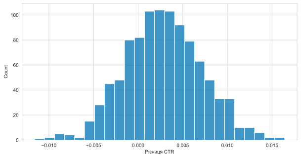Бакетинг
- Розбиваємо користувачів на бакети (100 груп) за допомогою хеш-функції
- Для кожного бакету рахуємо груповий CTR
- Порівнюємо дві вибірки по 100 елементів за допомогою t-критерію Стюдента або U-критерію Манна-Уітні
Бакетинг
Рахуємо метрики:
new_df = df.groupby(['group', 'bucket']).sum(['views', 'ctr']).reset_index()
new_df['ctr'] = new_df.clicks / new_df.views
new_df.head()| group | bucket | user | base_user_ctr | views | clicks | ctr | |
|---|---|---|---|---|---|---|---|
| 0 | False | 0 | 190580 | 7.743613 | 215 | 31 | 0.144186 |
| 1 | False | 1 | 206513 | 9.642510 | 183 | 41 | 0.224044 |
| 2 | False | 2 | 233691 | 10.473614 | 246 | 58 | 0.235772 |
| 3 | False | 3 | 187097 | 9.967690 | 233 | 54 | 0.231760 |
| 4 | False | 4 | 284826 | 11.246381 | 207 | 36 | 0.173913 |
Рахуємо статистику:
Лінеризація
\[ CTR_{line}=Click - A \times Views\]
- \(A\) - відношення показів до кліків у контрольній групі
- Краща чутливість
- Можемо використовувати звичні тести
Лінеризація
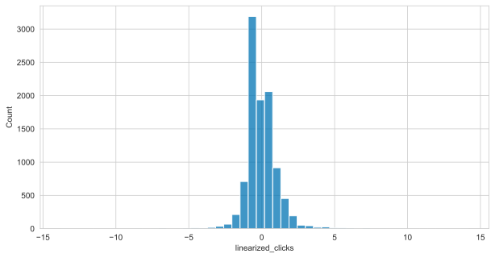Лінеризація
Рахуємо статистику:
Дякую за увагу!